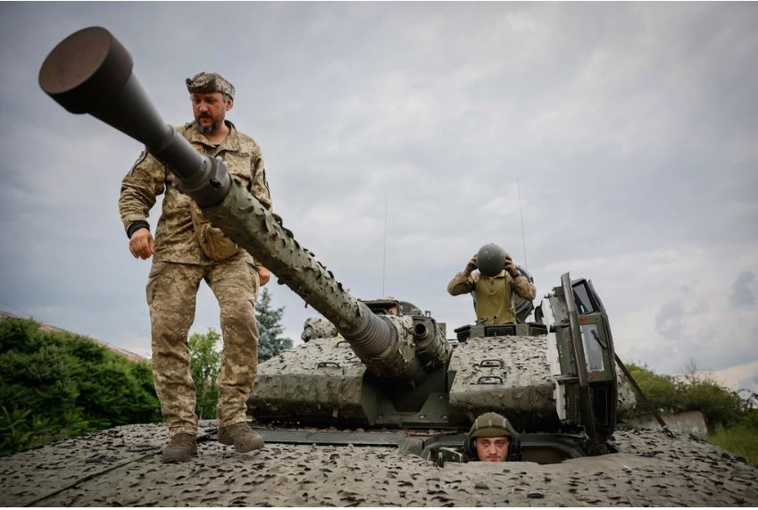
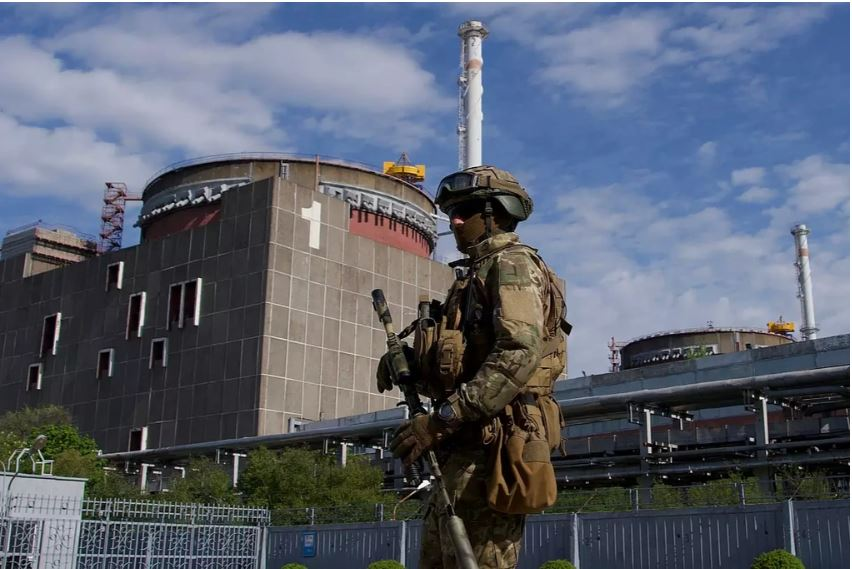

(Dân trí) - Ukraine tuyên bố quân đội của họ đang giành thế chủ động, tiến công theo mọi hướng, đồng thời nói rằng Nga đang rút bớt lực lượng khỏi nhà máy điện hạt nhân Zaporizhia ở miền Nam Ukraine.

Ukraine tuyên bố đang tiến công theo mọi hướng (Ảnh minh họa: Getty).>
Ukraine tiến công mọi hướng
"Nếu nói về toàn bộ chiến tuyến cả phía đông và phía nam, chúng ta đã nắm được thế chủ động chiến lược và đang tiến công theo mọi hướng", Thứ trưởng Quốc phòng Ukraine Hanna Maliar phát biểu với truyền thông ngày 30/6.
Bà Maliar cho biết, quân đội Ukraine đang di chuyển "một cách tự tin" ở hai bên sườn xung quanh thành phố Bakhmut, miền Đông nước này, và giao tranh đang diễn ra khốc liệt xung quanh thành phố.
"Ở mặt trận miền Nam, chúng ta đạt được rất nhiều thành công, khi là tiến hơn 1km trong vòng vài ngày, khi chưa đầy 1km, lúc khoảng 2km", quan chức Bộ Quốc phòng Ukraine nói.
Bà cũng nhấn mạnh, hiệu quả chiến dịch phản công hiện nay của Ukraine nên được đánh giá dựa vào nhiều yếu tố khác nhau, không chỉ bằng tốc độ tiến công hay diện tích lãnh thổ giành lại.
Nga rút bớt quân khỏi nhà máy Zaporizhia

Binh sĩ Nga gác tại nhà máy điện hạt nhân Zaporizhia ở miền Nam Ukraine (Ảnh: EPA).
Reuters dẫn thông tin từ cơ quan tình báo quân đội Ukraine ngày 30/6 nói rằng, Nga đang rút dần lực lượng khỏi nhà máy điện hạt nhân Zaporizhia ở tỉnh Zaporizhia, miền Nam Ukraine.
"Theo dữ liệu mới nhất, lực lượng Nga đang rút dần khỏi nhà máy điện hạt nhân Zaporizhia", Tổng cục Tình báo Bộ Quốc phòng (GUR) cho biết trên ứng dụng nhắn tin Telegram.
GUR cho hay, nhóm đầu tiên rời nhà máy là 3 nhân viên thuộc tập đoàn năng lượng hạt nhân quốc gia Rosatom của Nga. Các nhân viên người Ukraine ký hợp đồng với Rosatom cũng được khuyến cáo rời đi trước ngày 5/7 và đến bán đảo Crimea.
Trong tháng này, Kiev nói rằng Moscow đang lên kế hoạch thực hiện một vụ "tấn công khủng bố" ở khu vực nhà máy, trong đó có việc phát tán phóng xạ. Tuy nhiên, Nga đã bác bỏ cáo buộc này.
Theo Reuters